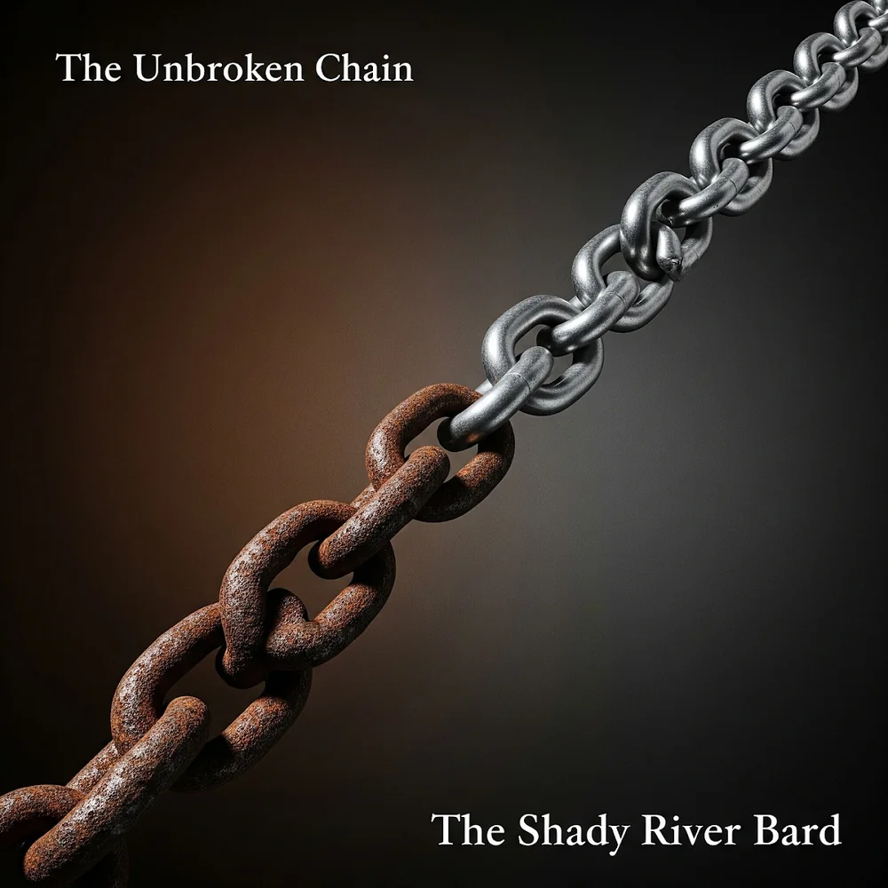

The Unbroken Chain
From Chattel to Convict Leasing to Modern Incarceration — and the Enduring Song of Freedom
"What is the unbroken chain? Is it the one made of iron, passed from the slave ship to the chain gang to the prison cell? Or is it the one made of spirit, a sequence of voices and melodies passed down through generations, refusing to be silenced? Both exist, intertwined in the very soul of American history."
The Unbroken Chain is a 4-act work of sonic testimony confronting a devastating truth hidden in plain sight: slavery was not abolished by the 13th Amendment, but given a new legal name. Tracing the evolution of forced labor through the post-emancipation convict lease system, the modern prison-industrial complex, and global debt peonage, the album contrasts systemic bondage with the parallel unbroken chain of cultural resistance, gospel testimony, and artistic reclamation.
The Four Acts of The Unbroken Chain
Follow the chronological and thematic evolution across four distinct soundscapes, from the raw work song of the cotton row to the triumphant communal gospel of survival.
Pillars of the Unbroken Chain
Drawn directly from the master album research, these six analytical pillars illuminate the legal, economic, and cultural mechanisms that perpetuated unfree labor and the music that resisted it.
Tracklist & Interactive Lyrics Vault
Explore all 14 tracks with complete, full-width lyrics drawers, official copyright disclosures, Suno prompts, and narrative breakdowns.